Grid, normal (quadratic) approximations, analytic/conjugate, MCMC
MCMC refers to a set of algorithms that sample from a probability distribution
Logic: if we don’t know a distribution we draw samples from it. Instead of computations to directly specify the shape of the posterior, we get samples from this distribution and use these samples to describe the posterior.
Think of marbles in the bag – we don’t know what that looks like but we can sample from it to compute a posterior.
Why this way?
Short answer: computation is difficult.
Computation of the posterior requires three terms: a prior, a likelihood and the evidence. The evidence (aka probability of the data; marginal likelihood) normalizes the posterior so it integrates (adds up) to 1.
We assume a prior distribution and we can compute a likelihood based on what we know about the distribution we assumed for the DGP (most of the time). The tricky part is the evidence. This makes computation analytically intractable.
With many parameters it is basically impossible to compute analytically. “Bayesian analysis is hard because integrals are hard”. Maximization (derivatives) is easier than integrals, which is why frequentist is so popular.
Conjugate priors are a less computational heavy approach to solving the integral problem. If posterior is from the same family as prior then it is easier to compute the evidence. E.g., a normal likelihood (with known σ) and a normal prior on the mean give a normal posterior; a binomial likelihood and a beta prior give a beta posterior (what we did on the grid in week 1); for a variance, the conjugate prior is an inverse-gamma. As a result the posterior, p( \(\theta\) | data), becomes analytically tractable.
The evidence is a constant with respect to \(\theta\) so the equation is often presented as:
\[ p(\theta | data) \propto p(data | \theta) \times p(\theta ) \] “The posterior is proportional to the likelihood X the prior.”
As long as we can calculate the right side of the equation we can then sample from the posterior distribution
Markov Chain Monte Carlo
Markov Chain: random process that moves between states, where the next state depends only on the current state. This is the “memoryless” property: given where you are now, where you were before adds nothing. (Draws are still correlated with earlier draws through the chain, which is why we’ll check autocorrelation.)
Monte Carlo: Famous casino in Monaco. Used here to refer to repeated random sampling, like tossing dice
In the limit, the samples generated by the MCMC method will be samples from the target (posterior in our case) distribution. Note that the shape of the posterior does not have to be defined by a known probability distribution – it can take any shape.
MCMC
Refers to a series of different algorithms. Metropolis, Gibbs, Hamiltonian are the most popular and historically relevant.
Stan (and thus brms) uses Hamiltonian
JAGS (in Kruschke’s DBDA) stands for Just Another Gibbs Sampler
BUGS (Bayesian inference Using Gibbs Sampling) was recently popular
Metropolis
Steps of algorithm:
Sample a value of \(\theta\)
Propose a new value centered on old + noise N(0, \(\sigma\) )
Calculate likelihood*prior of proposal
Divide the proposal’s value by the current value: the acceptance ratio
Draw a random number from runif(1)
If the random number is less than the ratio, move to the proposal; otherwise stay. (Uphill moves, ratio > 1, are always accepted; downhill moves only sometimes.)
Metropolis, step by step (1)
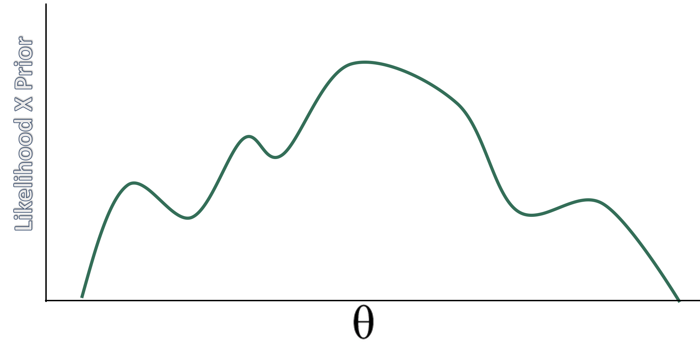
Metropolis, step by step (2)
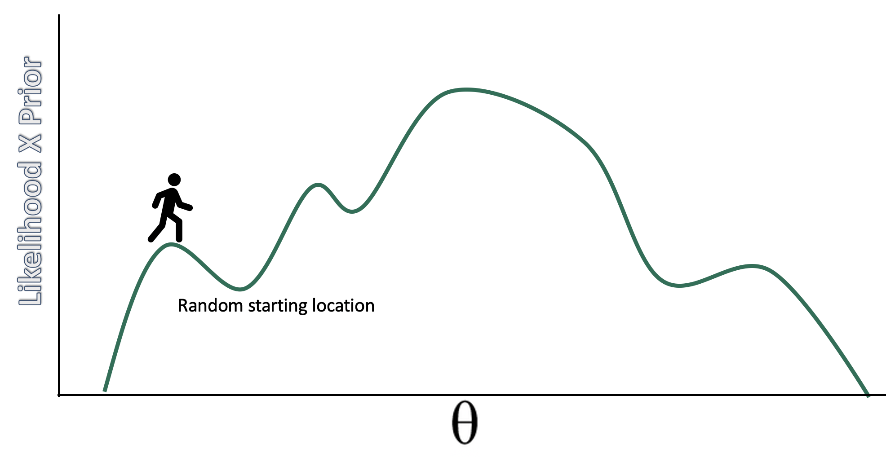
Metropolis, step by step (3)
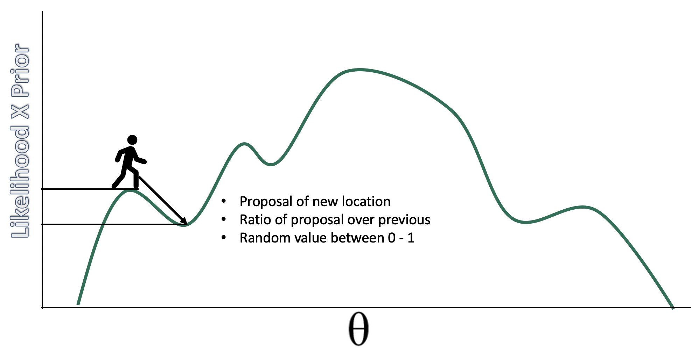
Metropolis, step by step (4)
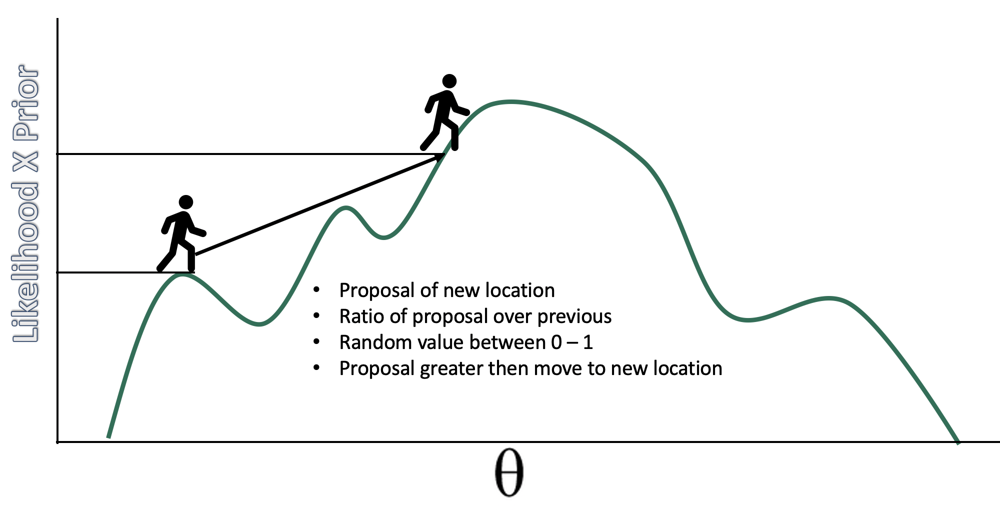
Metropolis, step by step (5)
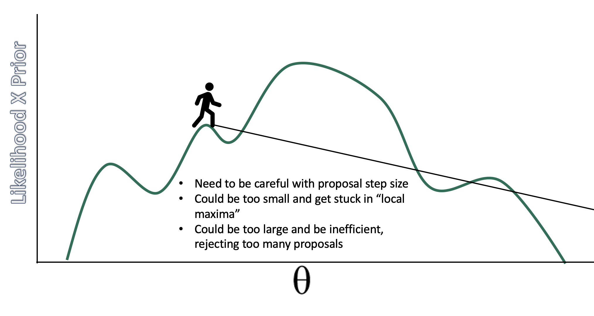
samples in the long run…
…will approximate the posterior distribution. The resulting chain will have the correct density in proportion to the posterior distribution.
Code
num <-1000positions <-rep(0, num) current <-10for (i in1:num) {# record current position positions[i] <- current# flip coin to generate proposal proposal <- current +sample(c(-1, 1), size =1)# now make sure he loops around the archipelago if (proposal <1) proposal <-10if (proposal >10) proposal <-1# move? prob_move <- proposal/current current <-ifelse(runif(1) < prob_move, proposal, current)} library(tidyverse)tibble(week =1:1000,iteration = positions) %>%ggplot(aes(x = week, y = iteration)) +geom_point(shape =1) +scale_x_continuous(breaks =seq(from =0, to =1000, by =100)) +scale_y_continuous(limits =c(-2, 13), breaks =seq(from =-2, to =15, by =2)) +coord_cartesian(xlim =c(0, 1000)) +labs(title ="Metropolis algorithm")+xlab("iteration") +ylab("value")
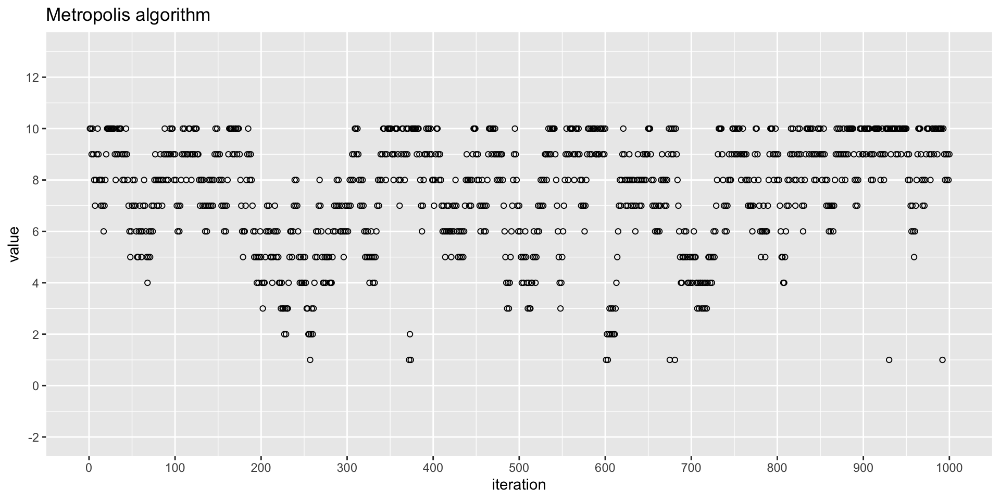
Where the chain spent its time
Code
tibble(week =1:1000,iteration = positions) %>%ggplot(aes(x= iteration)) +geom_density() +scale_x_continuous(breaks =seq(from =-0, to =10, by =1)) +xlab("island")
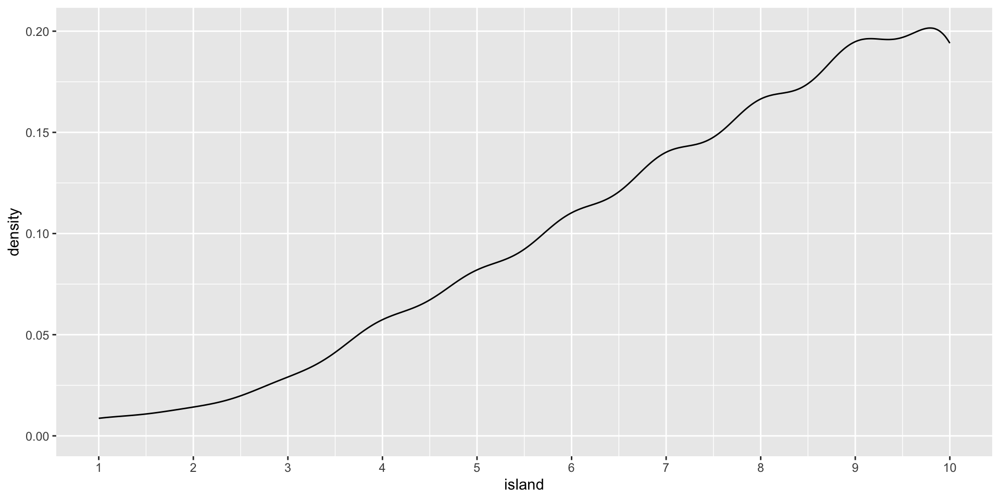
Multivariate posterior distributions
Posteriors are not simple hill climbing exercises, instead they represent high dimensional spaces. These high dimensional spaces make it such that there is a lot of space to explore.
To visualize posteriors we usually “marginalize” them, that is, visualize them averaged across other posteriors.
Two variables at once
Code
data <-read.csv("week3.csv") %>%# also at https://bayes27.netlify.app/week3.csvselect(-ID, -SES)library(ggExtra)p <-ggplot(data, aes(x=friends, y=health)) +geom_point() +theme(legend.position="none")p2 <-ggMarginal(p, type="density")p2
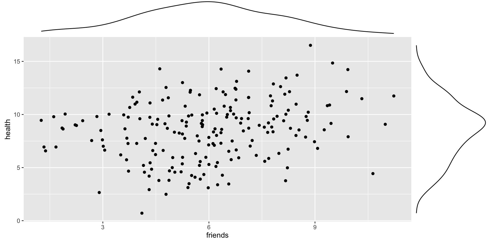
A correlated posterior
Code
samples =200r =0.93library('MASS')cor.dat =mvrnorm(n=samples, mu=c(0, 0), Sigma=matrix(c(1, r, r, 1), nrow=2), empirical=TRUE)X = cor.dat[, 1] # standard normal (mu=0, sd=1)Y = cor.dat[, 2] # standard normal (mu=0, sd=1)cor <-tibble(X,Y)cor %>%ggplot(aes(x = X, y = Y, fill =after_stat(density))) +stat_density_2d(geom ="raster", contour = F) +scale_fill_viridis_c(option ="D") +labs(x =expression(theta[1]),y =expression(theta[2])) +coord_equal()
Code
detach(package:MASS, unload=TRUE)
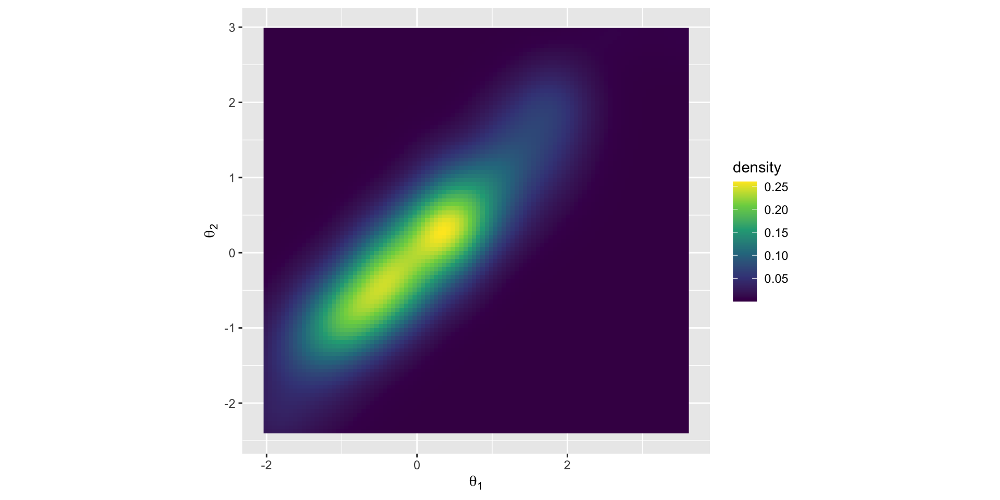
Gibbs
To explore a high dimensional space we need to be savvy about our proposals. Especially, when we are drawing samples for each parameter given a specific value of another parameter.
Gibbs updates one parameter at a time, drawing it directly from its distribution given the current values of all the others (its “full conditional”). Every draw is accepted, so there’s no wasted guess-and-check.
Usually faster than Metropolis (and good enough for many regressions), but it needs those conditional distributions to be easy to sample from, which in practice means conjugate priors.
When Gibbs and Metropolis struggle
Both struggle when parameters are strongly correlated, like the posterior below: moving one parameter at a time (Gibbs) or with small random steps (Metropolis) creeps slowly along the narrow ridge. Metropolis also needs its step size tuned: too small and it takes forever to explore, too large and most proposals are rejected.
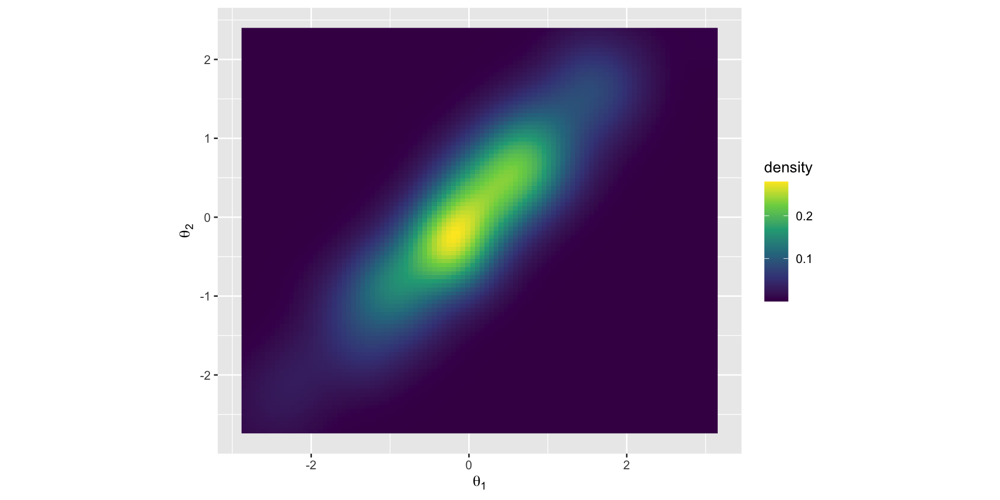
Concentration of measure
With high dimensional posteriors we need a different approach than guess and check. Becomes inefficient with greater rejections or exploration of same space.
Cannot just focus on the mode, we need to focus on the volume. The volume is an important part of the integral we are trying to solve with MCMC. Most of the volume is away from the mode.
Where the volume is (1)
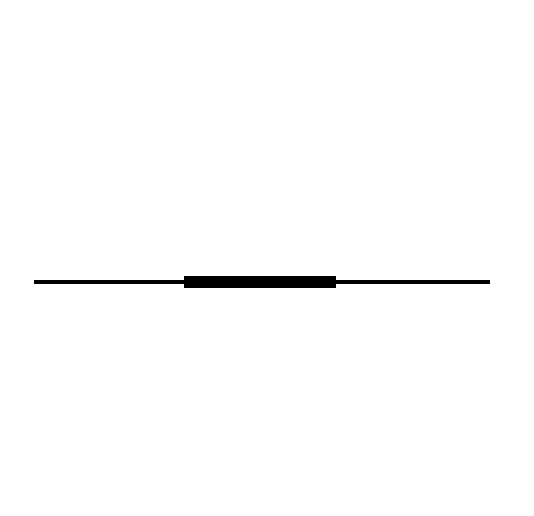
Where the volume is (2)
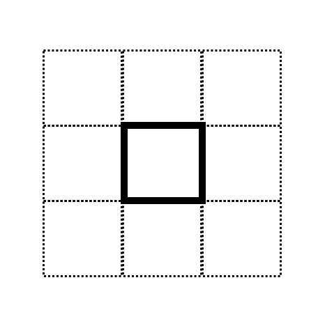
Where the volume is (3)
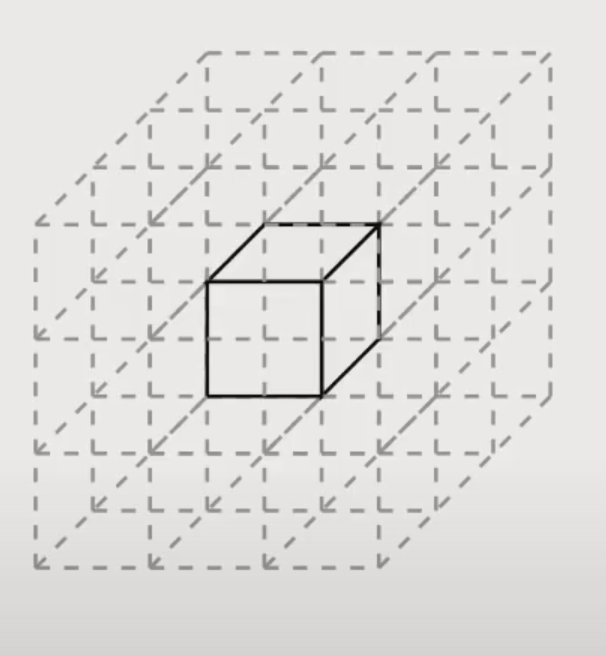
Hamiltonian MCMC
A different approach to guess and check; a physics simulation!
Pretend you have a hockey puck and flick it on an air hockey table that represent the minus log of the posterior (for a gaussian this would be a valley or a bowl). After a flick, we will record the position after a certain time. No rejections (almost)! Depending the topography the puck will go slower or faster and change direction.
Proposals based on the gradient, which is just the slope via derivative.
gradient descent
Maximum likelihood is \(L(\theta|X) = f(X|\theta)\) , the probability of obtaining data 𝑋 given some value of theta 𝜃, with some likelihood function that allows this calculation
Gradient descent is one such algorithm that could see what theta most likely.
The EM algorithm (Expectation–Maximization) is another common one. More of an iterative hike (E-step to M-step) rather than skateboarding
Gradient descent, pictured
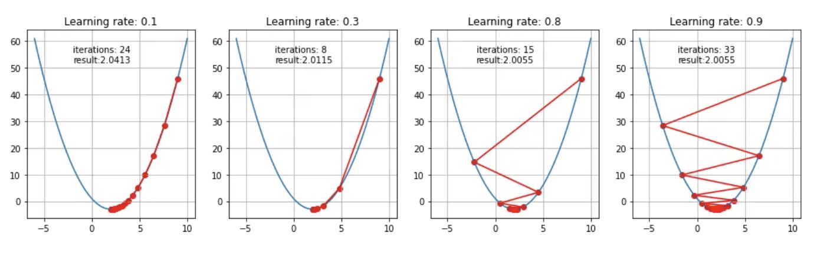
Visualize H-MCMC
https://chi-feng.github.io/mcmc-demo/app.html
Gradients and autodiff
If proposals depend on the curvature or gradient in the posterior how do we calculate that? Derivatives. Lots of them.
Automatic differentiation (autodiff) computes those gradients exactly and efficiently, which is what makes HMC practical.
We are not calculating the posterior directly, but instead just local estimation of the curvature (not full integral).
The samples give us a full picture of the posterior.
Can we ensure accurate posteriors?
Two key points:
It is iterative, does not create the posterior distribution, instead it results in samples.
It is stochastic. This means you won’t get the same result each time (unless you set a seed).
So we need to make sure that the algorithm “works” in that there are enough samples to get a good picture of the posterior, and that the samples will replicate across different attempts.
How many iterations do you need?
More iterations = more accurate posterior estimates. Total (usable) iterations = (Iterations - warm up samples)*chains
Effective sample size: roughly the number of draws divided by (1 + 2 × the sum of the autocorrelations), i.e., how many independent draws your correlated draws are worth. Can have greater than the number iterations due to negative correlations (this is good!). Referred to as Bulk_ESS in brms
Tail_ESS is similar but it is used more for CIs. The convergence of Markov chains are not uniform across the parameter. Central tendency estimates should use Bulk_ESS, whereas for intervals (the tails) look at Tail_ESS.
How much is enough? Rule of thumb: Bulk_ESS and Tail_ESS above about 400 (≈100 per chain with 4 chains) for every parameter you report (Vehtari et al., 2021).
A model to diagnose
Code
library(tidyverse)library(brms)week3 <-read.csv("week3.csv") %>%# also at https://bayes27.netlify.app/week3.csv dplyr::select(-ID, -SES) %>%mutate(mood.group.d =factor(mood.group) %>%fct_recode("control"="0", "tx"="1", "tx"="2"))h.3<-brm(family = gaussian, health ~0+ mood.group.d,prior =c(prior(normal(0, 10), class = b),prior(cauchy(0, 10), class = sigma)),data = week3,iter =1000, warmup =500, chains =2, cores =2,backend ="cmdstanr",file ="h.3")summary(h.3)
Family: gaussian
Links: mu = identity
Formula: health ~ 0 + mood.group.d
Data: week3 (Number of observations: 200)
Draws: 2 chains, each with iter = 1000; warmup = 500; thin = 1;
total post-warmup draws = 1000
Regression Coefficients:
Estimate Est.Error l-95% CI u-95% CI Rhat Bulk_ESS Tail_ESS
mood.group.dcontrol 7.98 0.35 7.25 8.66 1.00 858 677
mood.group.dtx 8.78 0.24 8.29 9.21 1.00 882 656
Further Distributional Parameters:
Estimate Est.Error l-95% CI u-95% CI Rhat Bulk_ESS Tail_ESS
sigma 2.83 0.14 2.57 3.10 1.00 1086 609
Draws were sampled using sample(hmc). For each parameter, Bulk_ESS
and Tail_ESS are effective sample size measures, and Rhat is the potential
scale reduction factor on split chains (at convergence, Rhat = 1).
Auto regressive correlation across chains
Code
library(bayesplot)mcmc_acf(h.3, pars =c("b_mood.group.dcontrol", "b_mood.group.dtx", "sigma"))
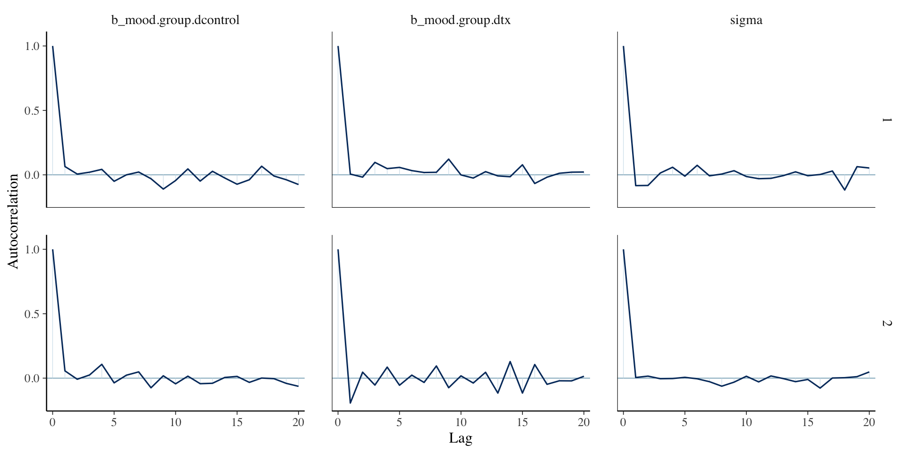
How many chains do you need?
You need enough chains to check convergence.
The number of chains depends on 1) how many cores your computer has and 2) how much time you have. Conceivably you could run 100 chains. The problem though is this is wasteful computationally, as you will discard more warmup iterations.
How many chains: the recommendation
The Stan team suggests that 4 chains are adequate for checking convergence. brms defaults are iter = 2000 and warmup = 1000 which yields 4000 usable posterior samples ((iter - warmup) * chains).
When setting up models: one short chain to debug, four chains for verification and inference
Checking convergence
Convergence is to a target distribution (the required posterior), not to a single value as in ML methods.
First step is to look for fuzzy caterpillars (mixing, stationarity, and convergence) in the trace plots. Note that our warm up samples are not visualized.
Trace plots
Code
plot(h.3)
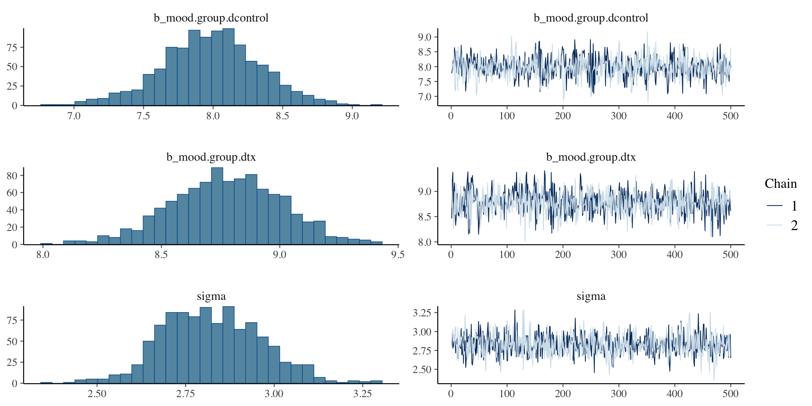
Rank plots
A more sensitive check than trace plots: pool all draws, rank them, then plot each chain’s ranks as a histogram. If the chains are exploring the same distribution, every chain’s histogram is roughly flat (each chain gets its fair share of low, middle, and high values).
Code
mcmc_rank_overlay(h.3, pars =c("b_mood.group.dcontrol", "b_mood.group.dtx", "sigma"))
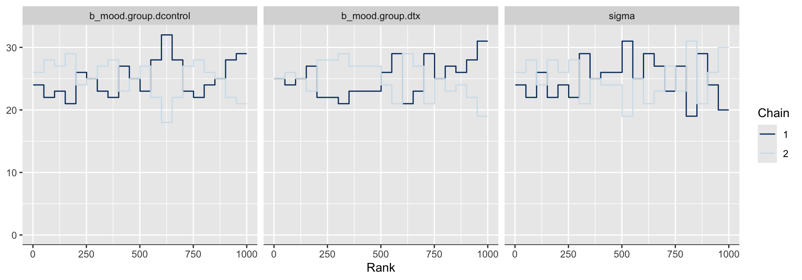
A chain whose histogram bulges at one end is stuck in part of the posterior, even if its trace plot looks like a fuzzy caterpillar.
R-hat
Compares the variance between chains to the variance within chains (brms reports the improved rank-normalized, split version).
1 indicates that the chains agree.
Current recommendation: R-hat < 1.01 for every parameter (Vehtari et al., 2021). Older rules of thumb used 1.1 or 1.05; brms warns above 1.05.
Fixing wild chains
Sometimes problems occur
Increase warmup
Increase samples
Change your model (priors or estimated parameters)
Modify H-MCMC sampler
Which warning, which fix? (1)
Warning
What it means
Usual cause
First things to try
R-hat > 1.01
chains disagree
too short a run; a multimodal or poorly identified posterior
more warmup/iterations; check the model (priors, redundant parameters)
Low Bulk/Tail ESS
too few effectively independent draws
high autocorrelation, often from strongly correlated parameters
more iterations; reparameterize or remove redundancy
Which warning, which fix? (2)
Warning
What it means
Usual cause
First things to try
Divergent transitions
the sampler hit regions it can’t follow; results may be biased
sharp curvature: tiny data with vague priors, funnels in multilevel models
better priors; adapt_delta = .95 or .99; non-centered parameterization
Max treedepth
the sampler took the longest allowed trajectories; an efficiency warning
fix the model first; then max_treedepth = 12 or more
Rule of thumb: divergences and non-identified models need a model fix; sampler settings are a last resort.
Divergent transitions
Because this is a physics simulation, we can examine the “energy” of the hockey puck to see if our simulation goes wrong. This is a good property of H-MCMC; similar properties do not exist for other algorithms.
Code
div.t <-brm(data =list(y =c(-1, 1)), family = gaussian, y ~1,prior =c(prior(normal(0, 1000), class = Intercept),prior(exponential(0.0001), class = sigma)),iter =2000, warmup =1000, chains =2,backend ="cmdstanr",file ="div.t")
A model with divergences
Code
summary(div.t)
Family: gaussian
Links: mu = identity
Formula: y ~ 1
Data: list(y = c(-1, 1)) (Number of observations: 2)
Draws: 2 chains, each with iter = 2000; warmup = 1000; thin = 1;
total post-warmup draws = 2000
Regression Coefficients:
Estimate Est.Error l-95% CI u-95% CI Rhat Bulk_ESS Tail_ESS
Intercept 6.20 318.21 -710.59 787.51 1.39 303 171
Further Distributional Parameters:
Estimate Est.Error l-95% CI u-95% CI Rhat Bulk_ESS Tail_ESS
sigma 541.60 1344.69 6.40 4440.09 1.51 4 9
Draws were sampled using sample(hmc). For each parameter, Bulk_ESS
and Tail_ESS are effective sample size measures, and Rhat is the potential
scale reduction factor on split chains (at convergence, Rhat = 1).
legs.1<-brm(height ~1+ leg_left + leg_right, data = legs,iter =400, warmup =100, chains =4, cores =4, seed =5,backend ="cmdstanr", file ="legs.1") # brms default (flat) priors on the slopes
Non-identified: the symptoms
Code
summary(legs.1)
Family: gaussian
Links: mu = identity
Formula: height ~ 1 + leg_left + leg_right
Data: legs (Number of observations: 100)
Draws: 4 chains, each with iter = 400; warmup = 100; thin = 1;
total post-warmup draws = 1200
Regression Coefficients:
Estimate Est.Error l-95% CI u-95% CI Rhat Bulk_ESS Tail_ESS
Intercept 1.79 0.27 1.28 2.31 1.00 1524 1069
leg_left 0.59 2.24 -3.74 5.20 1.06 147 157
leg_right 1.25 2.24 -3.39 5.59 1.06 147 157
Further Distributional Parameters:
Estimate Est.Error l-95% CI u-95% CI Rhat Bulk_ESS Tail_ESS
sigma 0.60 0.04 0.53 0.70 1.01 590 746
Draws were sampled using sample(hmc). For each parameter, Bulk_ESS
and Tail_ESS are effective sample size measures, and Rhat is the potential
scale reduction factor on split chains (at convergence, Rhat = 1).
R-hat above 1.01, ESS around 150, and each leg slope’s interval runs from about −4 to +5 even though leg length obviously predicts height. Look at the shape to see why.
Non-identified: the shape
Code
mcmc_scatter(legs.1, pars =c("b_leg_left", "b_leg_right"), alpha = .3)
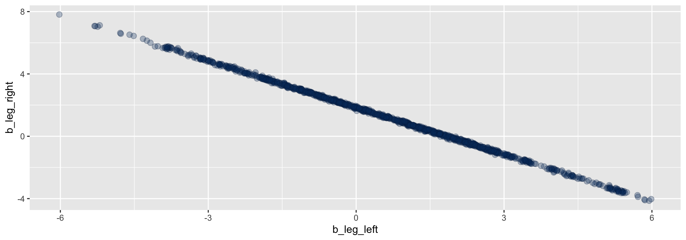
The data only pin down the sum of the two slopes, so the posterior is a long, thin ridge. Running longer maps the ridge more thoroughly but can’t make it narrower: fix the model (drop or combine the duplicate, or give the slopes real priors). HW 5 has you work through a version of this.
Leap Frog steps and NUTS
Need to figure out the correct 1) step size (time interval) and 2) number of leap frog steps (where the gradients are calculated).
Step size is done through warm up samples.
Number of steps is done with NUTS, the No U-Turn Sampler. It makes sure that your puck does not end up in the same place it started. It does so by running the simulation in two directions. Provides optimal number of steps specific to the gradient you are currently in.
Fixing divergences: adapt_delta
If dealing with divergent transitions, increasing the acceptance probability during warm up will result in smaller steps (smaller time interval) and a longer sampling time (but more robust sampling).
Code
h.3<-brm(family = gaussian, health ~0+ mood.group.d,prior =c(prior(normal(0, 10), class = b),prior(cauchy(0, 10), class = sigma)),data = week3,iter =1000, warmup =500, chains =2, cores =2, control =list(adapt_delta = .95), # default is .8 file ="h.3")summary(h.3)
tree depth
Divergent transitions are a validity concern, hitting the maximum treedepth is an efficiency concern. When the maximum allowed tree depth is reached it means the H-MCMC sampler is terminating to avoid excessively long execution time. Treedepth is associated with steps via: 2^treedepth, with 2^10 = 1024 leapfrog steps the default.
Code
h.3<-brm(family = gaussian, health ~0+ mood.group.d,prior =c(prior(normal(0, 10), class = b),prior(cauchy(0, 10), class = sigma)),data = week3,iter =1000, warmup =500, chains =2, cores =2, control =list(max_treedepth =15), # default is 10file ="h.3")summary(h.3)
Preview: divergences in multilevel models
The most common place you’ll see divergences is a multilevel model with few groups or a small between-group SD. If group effects are \(u_j \sim \text{Normal}(0, \tau)\), then when \(\tau\) is near 0 all the \(u_j\) are squeezed near 0, and the posterior takes a funnel shape that HMC can’t follow with one step size.
The standard fix is the non-centered parameterization: sample standardized effects and scale them,
Same model, different geometry: the \(z_j\) don’t get squeezed when \(\tau\) is small. brms already does this for you (you’ll see it in stancode() in the multilevel weeks), but knowing why helps when you write your own Stan code.